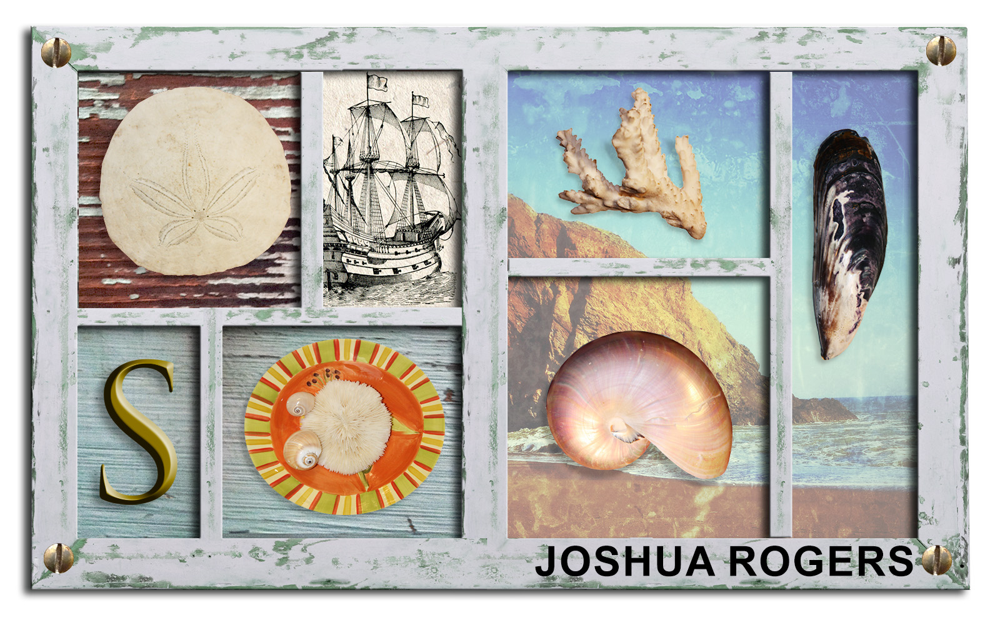

Joshua Rogers's Photoshop Experience
Selections
This lesson focused on using different selection tools to reposition images and remove backgrounds.
First, we used the Quick Selection tool to isolate the shell and move it to a new position on the image. Next, the Elliptical Marquee tool was used to create an oval-shaped selection. We used this to select the furry creature and place it onto a plate in its new location.
For the third step, we worked with the coral image, which had a white background. We created a rectangular selection around it and then used the Magic Wand tool to remove the white background, leaving only the coral. This allowed us to move it freely to its new position.
The Lasso tool was then used to trace around the coral rock. After selecting it, we rotated the image 90 degrees using the Transform → Rotate option to better fit the layout
Next, we used the Magnetic Lasso tool, which helps create more precise selections by automatically snapping to the edges of an object. This tool was used to cut out the shrimp and place it where it was needed in the composition.
To add detail to the edges of the image, we once again used the Elliptical Marquee tool to select a nail and move it to each corner. We duplicated and rotated the nails so they would not all look identical
Finally, we used the Crop tool to remove unnecessary background areas and focus only on the final composition. After placing all elements correctly, we added our name to complete the project.
